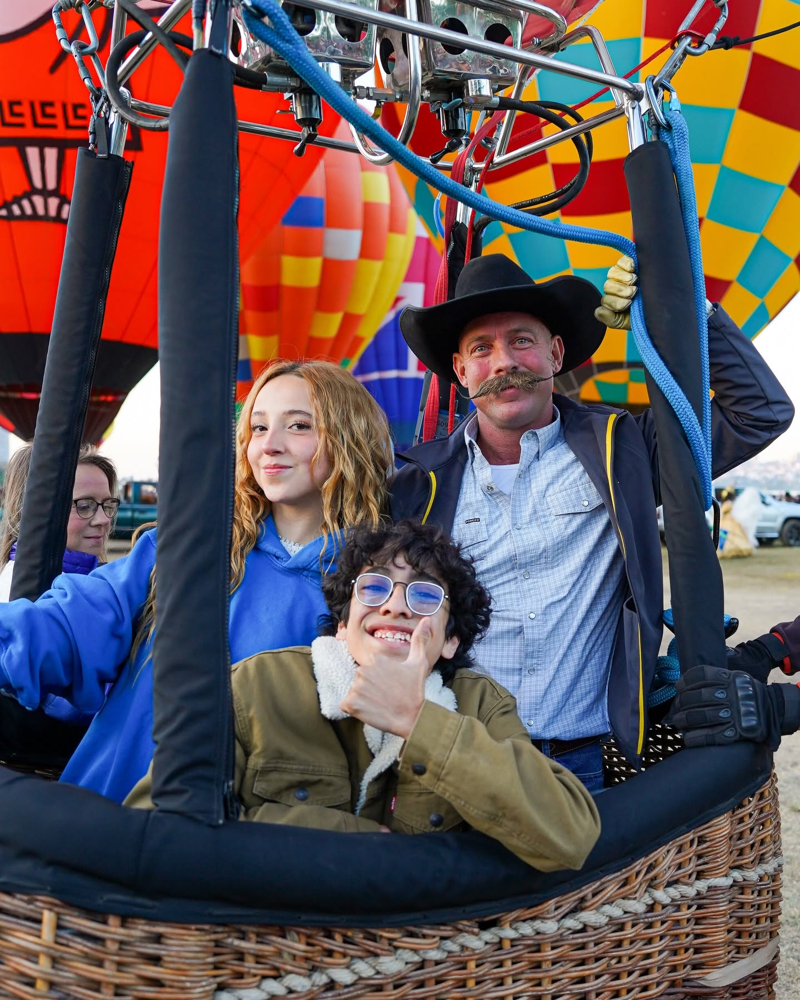

Reflexión final
Más allá de resolver acertijos y descifrar códigos, esta misión te permitió comprender cómo un evento cultural puede transformarse en un símbolo de identidad, innovación y desarrollo turístico.
El Festival Internacional del Globo no es solamente un espectáculo visual. Es una muestra de cómo una idea que comenzó con 25 globos logró convertirse en un evento de reconocimiento internacional que reúne culturas, tradiciones, tecnología y experiencias compartidas.
Al igual que los globos aerostáticos que se elevan sobre León, el conocimiento adquirido durante esta experiencia te permite ampliar tu perspectiva y descubrir nuevas formas de comprender el valor del patrimonio cultural.
